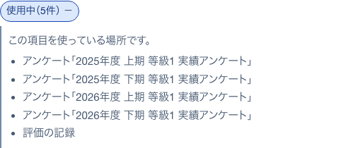
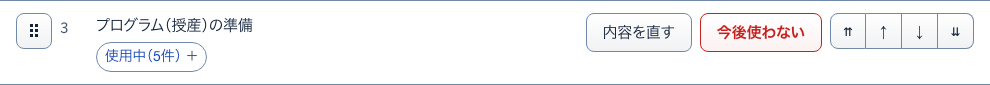
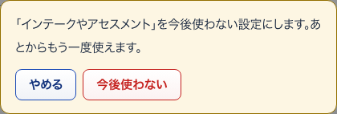
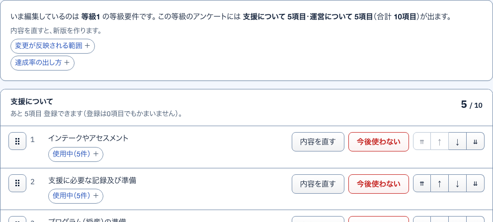
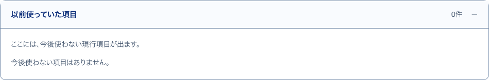

9使用中開いて見る
S14 等級要件（支援・運営） ・ 押すもの: 「使用中」

中に出るもの
- この項目を使っている場所です。
- アンケートの名前
- 確定済みの評価
10内容を直す開いて見る
S14 等級要件（支援・運営） ・ 押すもの: 「内容を直す」 ・ 閉じる: やめる

中に出るもの
- いまの文の入力欄
- 以前の内容は変更履歴に残ります。
中で押せるもの
- 新版として保存: 直した文を新しい版として保存する
- やめる: 元の行に戻す
11今後使わない確かめる小窓
S14 等級要件（支援・運営） ・ 押すもの: 「今後使わない」 ・ 閉じる: やめる

中に出るもの
- 「（項目の文）」を今後使わない設定にします。あとからもう一度使えます。
中で押せるもの
- 今後使わない: 一覧から外し、以前使っていた項目へ移す
- やめる: 小窓を閉じる
12完全に消す確かめる小窓
S14 等級要件（支援・運営） ・ 押すもの: 「完全に消す」 ・ 閉じる: やめる
中に出るもの
- 「（項目の文）」を完全に消します。元に戻せません。
- 一度もアンケートに出していない項目です。
- 公開したアンケートと確定済みの評価は変わりません。
中で押せるもの
- 完全に消す: 項目を消す
- やめる: 小窓を閉じる
13項目を追加開いて見る
S14 等級要件（支援・運営） ・ 押すもの: 「＋ 項目を追加」 ・ 閉じる: 閉じる

中に出るもの
- 入力欄（例）担当する利用者の支援計画を期限内に作成できる）
中で押せるもの
- この内容で追加する: 項目を1つ足す
- 閉じる: 欄を閉じる
14以前使っていた項目開いて見る
S14 等級要件（支援・運営） ・ 押すもの: 「以前使っていた項目」

中に出るもの
- ここには、今後使わない現行項目が出ます。
- 今後使わないの札つきの項目
- 0件なら 今後使わない項目はありません。
中で押せるもの
- もう一度使う: 一覧に戻す（押すと保存する）
- 完全に消す: 確認の小窓を出す